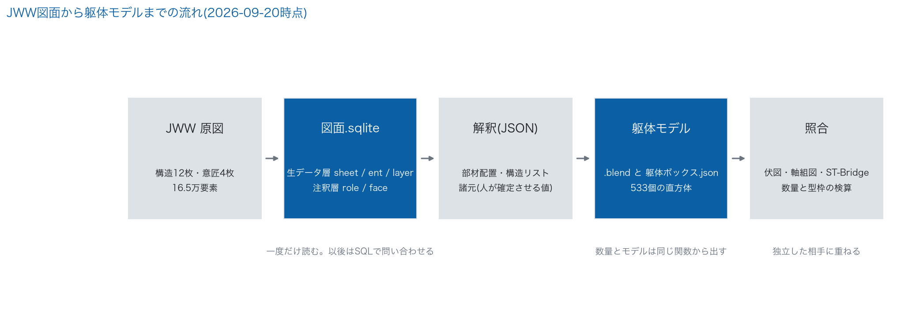
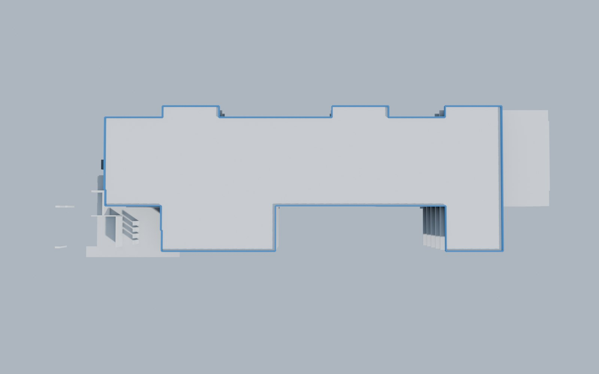
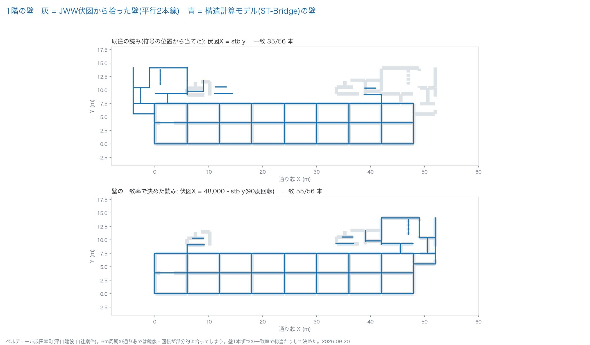
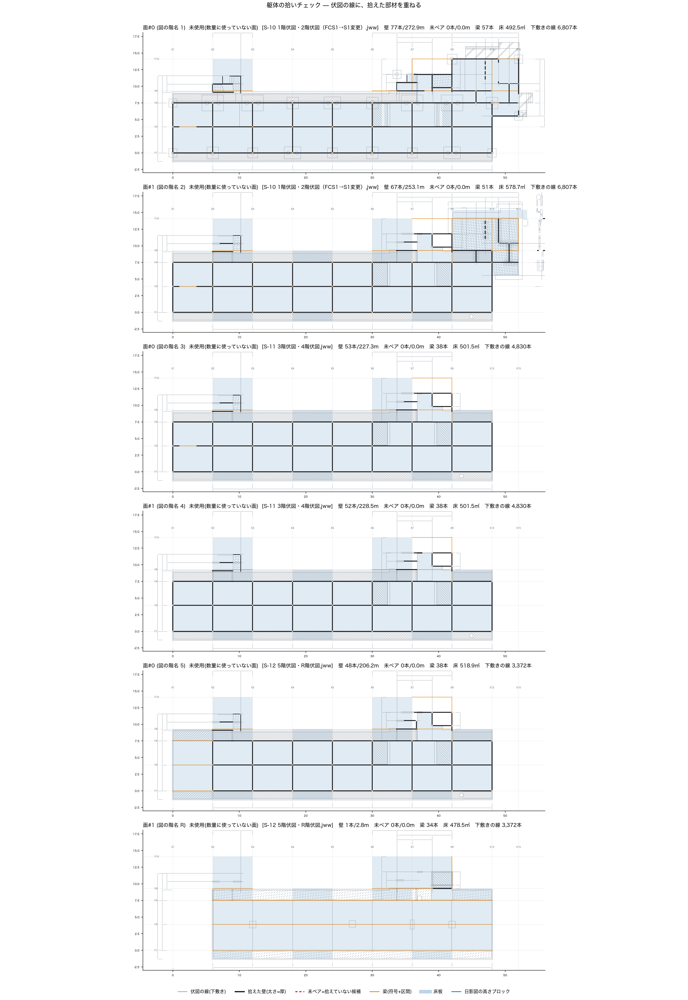

JWW図面から躯体を立てて、二つの正解に重ねた
ベルデュール成田幸町(平山建設 自社案件・RC壁式5階・39戸・2025年7月竣工)。公開版。2026-09-20 時点
社内のJWW図面(構造12枚・意匠4枚、約16万5千要素)を一度だけ読んでSQLiteに入れ、数量と同じ規則で躯体を533個の直方体として立て、軸組図とST-Bridge(構造計算モデル)に重ねた結果です。note記事「BIMがなくても積算はできました ─ 社内のJWWをAIに読ませた話」の続きにあたります。
成果物
| ファイル | 何か |
|---|---|
| check-sheet.html / check-sheet.pdf | 目視チェック票(A3横・表裏)。社内では設計課と積算課が同じ紙を見て「図面にあってモデルに無いものは何か」に丸を付ける |
| model-compare-stb.md | JWW伏図から拾った壁と ST-Bridge の壁を1枚ずつ突き合わせた表。片方にしか無い壁の一覧 |
図






公開版で除いたもの
実績数量(社内の積算資料の値)、取引先名、構造事務所名、地番、担当者名。図面から拾った数量と、拾いどうしの比較(モデル実測と2D数量の差、壁の一致率、被覆率)だけを載せています。
設計課の法規精査・積算担当の確認前の一次判定です。数字は概算であり、建物の性能や適法性を示すものではありません。JWWの読み取り部分は tools/jww-reader(MIT)。SQL化・モデル化・照合のツールは社内リポジトリで育てており、公開の形は別途整えます。 ─ 平山建設株式会社